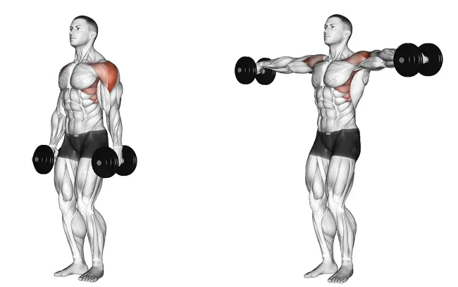
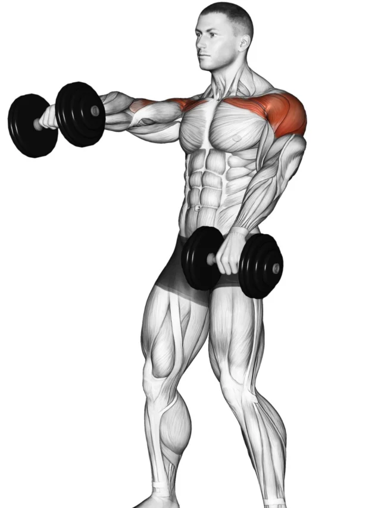
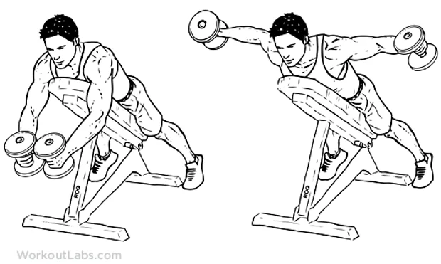

Exercícios para ombros:
Elevação lateral com halter
Em pé, afaste os pés na largura do quadril, mantenha uma postura ereta e olhe para frente. Faça uma leve contração abdominal e mantenha os braços posicionados ao lado do corpo com a palma das mãos viradas para o corpo, pegue o halter e eleve os braços lentamente, sem flexioná-los, até que as mãos atinjam a altura dos ombros.
Elevação frontal com halter
Em pé, com os pés paralelos e afastados na largura do quadril, segure os halteres com as palmas das mãos voltadas para baixo (pegada pronada). Deixe os joelhos levemente flexionados, os braços à frente do corpo e estendidos para baixo, na linha da articulação dos ombros. Mantenha as escápulas contraídas (fechadas).
Crucifixo inverso com halter
Fique em pé com as pernas levemente afastadas entre si segurando um halter em cada mão. Então, flexione um pouco os joelhos e incline o tronco para a frente até que suas costas fiquem paralelas ao chão. Agora, estique os braços em direção ao chão. Considere esta a posição inicial do crucifixo invertido. Solte o ar enquanto abre os braços para as laterais e para o alto até a altura dos ombros formando um “T” com o corpo.